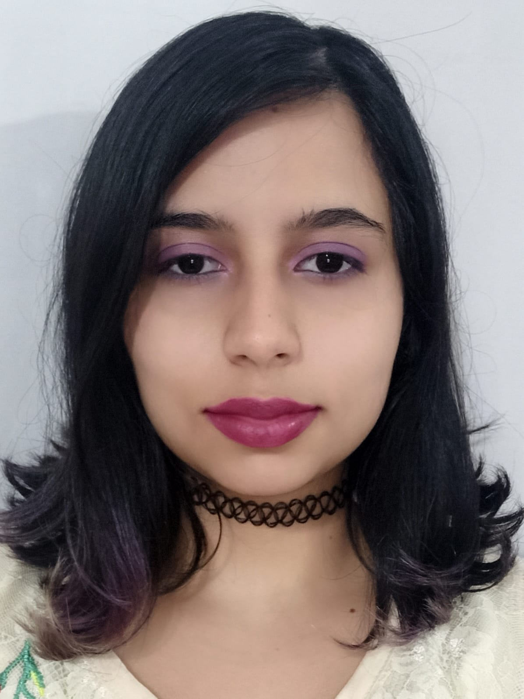

Sobre mim
Beatriz Martins Fraga
Análise de Desenvolvimento de Sistemas - USCS
Olá, prazer em conhecer!
Estou estudando para ser front-end. Meu foco é em Html, Css e Js.
Atualmente faço parte do programa de capacitação da Alpar.
Eu amo café de cápsula e Cup Noodles.